Labor Dispatch vs Outsourcing in China: A 2026 Compliance Guide for Foreign Companies
Executive summary
- Labeling a relationship as “outsourcing” does not guarantee it will be treated that way in practice.
- Authorities and dispute bodies may focus on actual management control, not contract title alone.
- Foreign employers should assess operating substance: who directs work, who evaluates performance, and who carries employment obligations.
- A role-by-role classification review is usually the fastest way to reduce structure risk.
Why this distinction matters more than many buyers expect
For global teams entering China, workforce structuring decisions often happen under speed pressure. Commercially, outsourcing can look simpler and cheaper at first glance. Legally and operationally, however, mismatch between contract form and real management behavior can create liabilities that surface later—often during disputes, compliance reviews, or relationship breakdowns.
An EOR strategy works best when structure design, contract language, and day-to-day management behavior point in the same direction. If those three elements diverge, risk accumulates quietly.
Decision framework: substance over labels
Question 1: Who directs daily work?
If the client side controls schedules, tasks, supervision, and discipline directly, the arrangement may look less like independent service delivery and more like labor supply in substance.
Question 2: Who owns employment lifecycle obligations?
Hiring, onboarding, leave administration, compensation operations, and termination responsibility should be clearly allocated and consistently executed.
Question 3: Does payment logic match delivery model?
Pure service outcomes and labor-hour style billing can signal different legal and operational expectations. Mixed signals invite scrutiny.
Question 4: Is documentation aligned with real operations?
Contracts, SOPs, manager behavior, and communication scripts should not contradict each other.
Scenario-led analysis
Scenario A: “We outsourced the function, but our managers still run daily supervision”
This is a classic mismatch. Operational convenience can undermine legal positioning if control patterns suggest a different relationship than contractual language.
Scenario B: “We use dispatch-like structure for long-term core roles”
Sustained use in core positions without careful legal design can increase challenge risk. Periodic role classification review is essential.
Scenario C: “We changed model but kept old documents and communication habits”
Transition risk is real. Historical documents and informal practices can conflict with new model claims.
Action checklist for EOR buyers
1. Run role-by-role structure mapping.
2. Document supervision model per role cluster.
3. Align contract terms with real operating behavior.
4. Train managers on model-consistent communication.
5. Audit payment logic and reporting flows.
6. Archive evidence of periodic classification review.
FAQ
Can we simply call all external staffing “outsourcing”?
No. Classification may be assessed based on practical substance, not naming.
Does EOR eliminate structure classification risk automatically?
No. EOR helps execution, but structure design and management behavior still matter.
How frequently should model reviews be done?
At least annually, and additionally when role scope or management model changes.
Which team should own governance?
Legal, HR, payroll operations, and business leaders should co-own decision checkpoints.
What is the most common preventable mistake?
Keeping contract language and actual supervision behavior out of sync.
Is this only a legal concern?
No. It also affects budgeting, employee experience, and dispute response readiness.
Disclaimer
Informational content only and not legal advice.
Sources
- MOHRSS policy resources: http://www.mohrss.gov.cn/
- PRC labor-related legal references from official databases
- Public legal interpretation resources from Chinese court channels
Need local employment support in China?
If you need a compliance-first Employer of Record (EOR) partner for hiring, payroll, and risk controls in China, China-Payroll.com can help your team evaluate the right setup.
Image Prompt Pack
Create a 16:9 hero image for article title: 'Labor Dispatch vs Outsourcing in China: A 2026 Compliance Guide for Foreign Companies'. Scene: global operations team evaluating workforce model options for China market entry. Include motifs: decision matrix, org c…